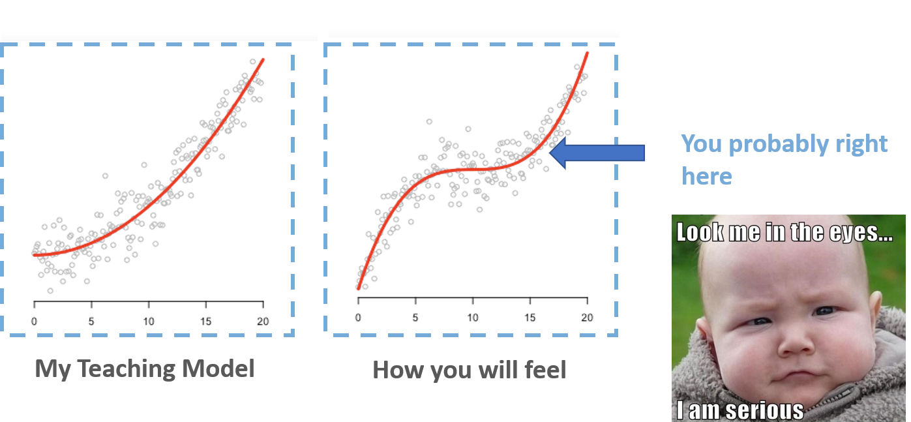
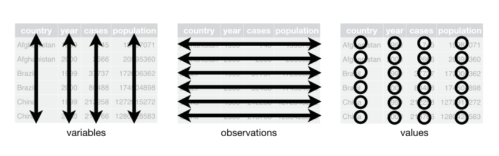
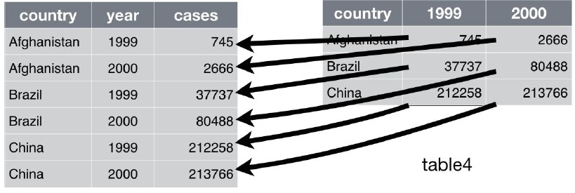
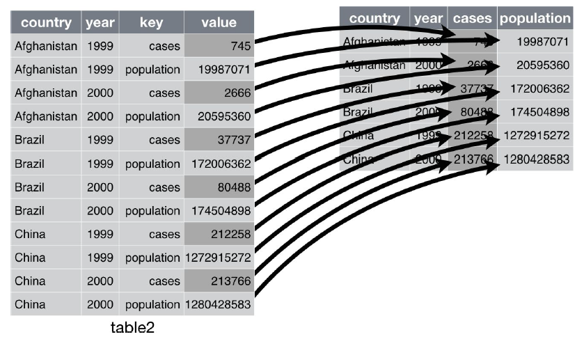
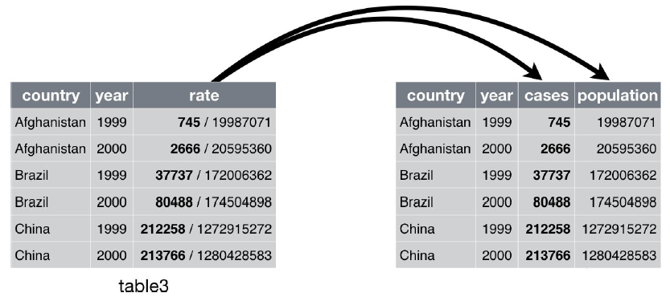
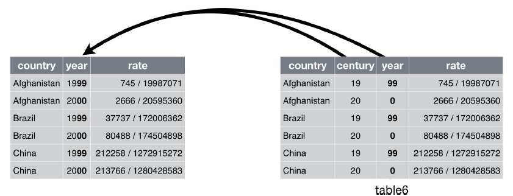

Data wrangling with tibbles, readr and tidyr
Where are we (probability 0.8)

Tibbles with tibble
Tibble and Prerequisites
Tibbles are a modern take on data frames. They keep the features that have stood the test of time, and drop the features that used to be convenient but are now frustrating (i.e. converting character vectors to factors).
library(tidyverse)
#or
library(tibble)
Packages/Books Authors
Dr. Hadley Wickham
- Chief Scientist at RStudio,
- Adjunct Professor of Statistics at University of Auckland, Stanford University, and Rice University
- Books: R for Data Science, Advanced R, R packages
- Packages: tidyverse, devtools, pkgdown
Dr. Yihui Xie
- SDE at RStudio
- Packages: knitr, rmarkdown, shiny, tinytex, bookdown, DT
Tips
If you wanted to learn more about the packages from tidyverse, you may try
vignette("tibble") vignette("ggplot2-specs")Pronounce [vin'jet]
Creating tibbles
tibble() is a nice way to create data frames. It encapsulates best practices for data frames:
tibble(letter=c("a","b","c"), number=c(1:3))
## # A tibble: 3 × 2
## letter number
## <chr> <int>
## 1 a 1
## 2 b 2
## 3 c 3
Convert the data frame into tibble version of data frame
You can do that with as_tibble():
irisTibble <- as_tibble(iris)
class(irisTibble)
Adjust the names of variables
data.frame() will adjust the name of variables, unless overwrite check.names=F
data.frame(`a b`=c(1:3))
## a.b
## 1 1
## 2 2
## 3 3
data.frame(`a b`=c(1:3), check.names = F)
## a b
## 1 1
## 2 2
## 3 3
tibble() never adjusts the name of variables
tibble(`a b`=c(1:3))
## # A tibble: 3 × 1
## `a b`
## <int>
## 1 1
## 2 2
## 3 3
tibble() never adjusts the name of variables: Nonsyntactic names
It’s possible for a tibble to have column names that are not valid R variable names, aka nonsyntactic names.
data.frame(
`:(` = "unhappy",
` ` = "space",
`2000` = "number"
)
## X.. X. X2000
## 1 unhappy space number
tibble(
`:(` = "unhappy",
` ` = "space",
`2000` = "number"
)
## # A tibble: 1 × 3
## `:(` ` ` `2000`
## <chr> <chr> <chr>
## 1 unhappy space number
Arguments
tibble(x=1:3,
y=x^2)
## # A tibble: 3 × 2
## x y
## <int> <dbl>
## 1 1 1
## 2 2 4
## 3 3 9
Creating with tribble()
Another way to create a tibble is with tribble(), short for transposed tibble. tribble() is customized for data entry in code: column headings are defined by formulas (i.e., they start with ~), and entries are separated by commas. This makes it possible to lay out small amounts of data in easy-to-read form:
tribble(~x, ~y, ~z,
"a", 1, 3.5,
"b", 2, 3)
## # A tibble: 2 × 3
## x y z
## <chr> <dbl> <dbl>
## 1 a 1 3.5
## 2 b 2 3
Data import with readr
readr and prerequisites
Here we will only introduce the most common function from the readr package read_csv()
library(tidyverse)
#or
library(readr)
Compared to the Base R function read.csv()
- They are typically much faster (~10x)
- They produce tibbles, and they don’t convert character vectors to factors, use row names, or munge the column names.
- They are more reproducible.
Reading csv with read_csv()
df1 <-
read_csv(
"https://gist.githubusercontent.com/omarish/5687264/raw/7e5c814ce6ef33e25d5259c1fe79463c190800d9/mpg.csv"
)
df2 <- read_csv(readr_example("mtcars.csv"))
df1 <-
read_csv(
"https://gist.githubusercontent.com/omarish/5687264/raw/7e5c814ce6ef33e25d5259c1fe79463c190800d9/mpg.csv"
)
## Rows: 398 Columns: 9
## ── Column specification ────────────────────────────────────────────────────────
## Delimiter: ","
## chr (2): horsepower, name
## dbl (7): mpg, cylinders, displacement, weight, acceleration, model_year, origin
##
## ℹ Use `spec()` to retrieve the full column specification for this data.
## ℹ Specify the column types or set `show_col_types = FALSE` to quiet this message.
df1
## # A tibble: 398 × 9
## mpg cylinders displacement horsepower weight acceleration model_year origin
## <dbl> <dbl> <dbl> <chr> <dbl> <dbl> <dbl> <dbl>
## 1 18 8 307 130 3504 12 70 1
## 2 15 8 350 165 3693 11.5 70 1
## 3 18 8 318 150 3436 11 70 1
## 4 16 8 304 150 3433 12 70 1
## 5 17 8 302 140 3449 10.5 70 1
## 6 15 8 429 198 4341 10 70 1
## 7 14 8 454 220 4354 9 70 1
## 8 14 8 440 215 4312 8.5 70 1
## 9 14 8 455 225 4425 10 70 1
## 10 15 8 390 190 3850 8.5 70 1
## # … with 388 more rows, and 1 more variable: name <chr>
df2 <- read_csv(readr_example("mtcars.csv"))
## Rows: 32 Columns: 11
## ── Column specification ────────────────────────────────────────────────────────
## Delimiter: ","
## dbl (11): mpg, cyl, disp, hp, drat, wt, qsec, vs, am, gear, carb
##
## ℹ Use `spec()` to retrieve the full column specification for this data.
## ℹ Specify the column types or set `show_col_types = FALSE` to quiet this message.
df2
## # A tibble: 32 × 11
## mpg cyl disp hp drat wt qsec vs am gear carb
## <dbl> <dbl> <dbl> <dbl> <dbl> <dbl> <dbl> <dbl> <dbl> <dbl> <dbl>
## 1 21 6 160 110 3.9 2.62 16.5 0 1 4 4
## 2 21 6 160 110 3.9 2.88 17.0 0 1 4 4
## 3 22.8 4 108 93 3.85 2.32 18.6 1 1 4 1
## 4 21.4 6 258 110 3.08 3.22 19.4 1 0 3 1
## 5 18.7 8 360 175 3.15 3.44 17.0 0 0 3 2
## 6 18.1 6 225 105 2.76 3.46 20.2 1 0 3 1
## 7 14.3 8 360 245 3.21 3.57 15.8 0 0 3 4
## 8 24.4 4 147. 62 3.69 3.19 20 1 0 4 2
## 9 22.8 4 141. 95 3.92 3.15 22.9 1 0 4 2
## 10 19.2 6 168. 123 3.92 3.44 18.3 1 0 4 4
## # … with 22 more rows
Like tribble(), inline input is also accepted.
read_csv("x, y, z
1, 1, 1
2, 2, 2")
## Rows: 2 Columns: 3
## ── Column specification ────────────────────────────────────────────────────────
## Delimiter: ","
## dbl (3): x, y, z
##
## ℹ Use `spec()` to retrieve the full column specification for this data.
## ℹ Specify the column types or set `show_col_types = FALSE` to quiet this message.
## # A tibble: 2 × 3
## x y z
## <dbl> <dbl> <dbl>
## 1 1 1 1
## 2 2 2 2
Replace values with NA
read_csv("x, y, z
1, 1, 1
2, 2, 2", na="1")
## Rows: 2 Columns: 3
## ── Column specification ────────────────────────────────────────────────────────
## Delimiter: ","
## dbl (3): x, y, z
##
## ℹ Use `spec()` to retrieve the full column specification for this data.
## ℹ Specify the column types or set `show_col_types = FALSE` to quiet this message.
## # A tibble: 2 × 3
## x y z
## <dbl> <dbl> <dbl>
## 1 NA NA NA
## 2 2 2 2
Let's recall the example of h1b data in hw2
When we use the base function read.csv, the parse of data types may be wrong:
h1b19 <-
read.csv("E:/IE6600/materials/assignment/hw/hw2/h1b_datahubexport-2019.csv")
sapply(h1b19[, 3:6], class)
## Initial.Approvals Initial.Denials Continuing.Approvals
## "character" "character" "character"
## Continuing.Denials
## "character"
guess_max
The default guesses are only for the first 1000 rows. Sometimes, 1000 rows may not be enough for read_csv() to parse the column specification. We could use guess_max= to increase the guessing rows.
chg <- read_csv(readr_example("challenge.csv"))
## Rows: 2000 Columns: 2
## ── Column specification ────────────────────────────────────────────────────────
## Delimiter: ","
## dbl (1): x
## date (1): y
##
## ℹ Use `spec()` to retrieve the full column specification for this data.
## ℹ Specify the column types or set `show_col_types = FALSE` to quiet this message.
adj.chg<- read_csv(readr_example("challenge.csv"), guess_max = 1500)
Compared to default read.csv
adj.chg2<- read.csv(readr_example("challenge.csv"))
class(adj.chg2$y[1])
## [1] "character"
class(adj.chg$y[1])
## [1] "Date"
Two cases 1/2
Sometimes there are a few lines of metadata at the top of the file. You can use skip = n to skip the first n lines; or use comment = "#" to drop all lines that start with (e.g.) #:
read_csv("# A comment I want to skip
x,y,z
1,2,3", comment = "#")
## Rows: 1 Columns: 3
## ── Column specification ────────────────────────────────────────────────────────
## Delimiter: ","
## dbl (3): x, y, z
##
## ℹ Use `spec()` to retrieve the full column specification for this data.
## ℹ Specify the column types or set `show_col_types = FALSE` to quiet this message.
## # A tibble: 1 × 3
## x y z
## <dbl> <dbl> <dbl>
## 1 1 2 3
Two cases 2/2
The data might not have column names. You can use col_names = FALSE to tell read_csv() not to treat the first row as headings, and instead label them sequentially from X1 to Xn:
read_csv("1,2,3\n4,5,6", col_names = FALSE)
## Rows: 2 Columns: 3
## ── Column specification ────────────────────────────────────────────────────────
## Delimiter: ","
## dbl (3): X1, X2, X3
##
## ℹ Use `spec()` to retrieve the full column specification for this data.
## ℹ Specify the column types or set `show_col_types = FALSE` to quiet this message.
## # A tibble: 2 × 3
## X1 X2 X3
## <dbl> <dbl> <dbl>
## 1 1 2 3
## 2 4 5 6
read_csv("1,2,3\n4,5,6",col_names = c("x", "y", "z"))
Writing csv with write_csv()
The default syntax:
write_csv(yourDataName, "yourLocation/yourCSVname.csv")
Tidy data with tidyr
Prerequisites
In this chapter we’ll focus on tidyr, a package that provides a bunch of tools to help tidy up your messy datasets. tidyr is a member of the core tidyverse.
library(tidyr)
#or
library(tidyverse)
Five data tables we will use from the packages tidyverse:
table1, table2, table3, table4a, table4b
What is tidy data?
There are three interrelated rules which make a dataset tidy:
- Each variable must have its own column.
- Each observation must have its own row.
- Each value must have its own cell.

What do you think of this data? Tidy?
## # A tibble: 12 × 4
## country year type count
## <chr> <int> <chr> <int>
## 1 Afghanistan 1999 cases 745
## 2 Afghanistan 1999 population 19987071
## 3 Afghanistan 2000 cases 2666
## 4 Afghanistan 2000 population 20595360
## 5 Brazil 1999 cases 37737
## 6 Brazil 1999 population 172006362
## 7 Brazil 2000 cases 80488
## 8 Brazil 2000 population 174504898
## 9 China 1999 cases 212258
## 10 China 1999 population 1272915272
## 11 China 2000 cases 213766
## 12 China 2000 population 1280428583
## # A tibble: 6 × 3
## country year rate
## * <chr> <int> <chr>
## 1 Afghanistan 1999 745/19987071
## 2 Afghanistan 2000 2666/20595360
## 3 Brazil 1999 37737/172006362
## 4 Brazil 2000 80488/174504898
## 5 China 1999 212258/1272915272
## 6 China 2000 213766/1280428583
## # A tibble: 3 × 3
## country `1999` `2000`
## * <chr> <int> <int>
## 1 Afghanistan 745 2666
## 2 Brazil 37737 80488
## 3 China 212258 213766
## # A tibble: 3 × 3
## country `1999` `2000`
## * <chr> <int> <int>
## 1 Afghanistan 19987071 20595360
## 2 Brazil 172006362 174504898
## 3 China 1272915272 1280428583
## # A tibble: 6 × 4
## country year cases population
## <chr> <int> <int> <int>
## 1 Afghanistan 1999 745 19987071
## 2 Afghanistan 2000 2666 20595360
## 3 Brazil 1999 37737 172006362
## 4 Brazil 2000 80488 174504898
## 5 China 1999 212258 1272915272
## 6 China 2000 213766 1280428583
## # A tibble: 6 × 4
## country century year rate
## * <chr> <chr> <chr> <chr>
## 1 Afghanistan 19 99 745/19987071
## 2 Afghanistan 20 00 2666/20595360
## 3 Brazil 19 99 37737/172006362
## 4 Brazil 20 00 80488/174504898
## 5 China 19 99 212258/1272915272
## 6 China 20 00 213766/1280428583
Why ensure that your data is tidy?
- Picking one consistent way of storing data.
- Placing variables in columns is intuitively and computationally efficient
Spreading and Gathering
The tidyr packages is one part of the tidyverse To resolve one of the two common problems when dealing with datasets:
- One variable might be spread across multiple columns.
- One observation might be scattered across multiple rows.
We need to use gather() and spread() from tidyr
Gathering
A common problem is a dataset where some of the column names are not names of variables, but values of a variable
table4a
## # A tibble: 3 × 3
## country `1999` `2000`
## * <chr> <int> <int>
## 1 Afghanistan 745 2666
## 2 Brazil 37737 80488
## 3 China 212258 213766
table4a %>%
gather("1999", "2000", key="year", value="cases")
## # A tibble: 6 × 3
## country year cases
## <chr> <chr> <int>
## 1 Afghanistan 1999 745
## 2 Brazil 1999 37737
## 3 China 1999 212258
## 4 Afghanistan 2000 2666
## 5 Brazil 2000 80488
## 6 China 2000 213766

Exercise
use
gather()to make table4b tidytable4b## # A tibble: 3 × 3 ## country `1999` `2000` ## * <chr> <int> <int> ## 1 Afghanistan 19987071 20595360 ## 2 Brazil 172006362 174504898 ## 3 China 1272915272 1280428583Solution:
table4b %>% gather("1999", "2000", key="year", value="population")
Spreading
Spreading is the opposite of gathering. You use it when an observation is scattered across multiple rows.
table2
## # A tibble: 12 × 4
## country year type count
## <chr> <int> <chr> <int>
## 1 Afghanistan 1999 cases 745
## 2 Afghanistan 1999 population 19987071
## 3 Afghanistan 2000 cases 2666
## 4 Afghanistan 2000 population 20595360
## 5 Brazil 1999 cases 37737
## 6 Brazil 1999 population 172006362
## 7 Brazil 2000 cases 80488
## 8 Brazil 2000 population 174504898
## 9 China 1999 cases 212258
## 10 China 1999 population 1272915272
## 11 China 2000 cases 213766
## 12 China 2000 population 1280428583
table2 %>%
spread(key=type, value=count)
## # A tibble: 6 × 4
## country year cases population
## <chr> <int> <int> <int>
## 1 Afghanistan 1999 745 19987071
## 2 Afghanistan 2000 2666 20595360
## 3 Brazil 1999 37737 172006362
## 4 Brazil 2000 80488 174504898
## 5 China 1999 212258 1272915272
## 6 China 2000 213766 1280428583

Exercise I
Use
tribble()ortibble()create a data table as follows:## # A tibble: 2 × 3 ## pregnant male female ## <chr> <dbl> <dbl> ## 1 yes NA 10 ## 2 no 20 12Then make it tidy.
Solution:
tribble(~pregnant, ~male, ~female, "yes", NA, 10, "no", 20, 12 ) %>% gather(male, female, key="gender", value="pop")
Exercise II
Use tribble() or tibble() create a data table as follows:
## # A tibble: 6 × 3 ## person index number ## <chr> <chr> <dbl> ## 1 A weight(kg) 52.5 ## 3 C weight(kg) 54.6 ## 4 A height(cm) 179. ## 5 B height(cm) 171. ## 6 C height(cm) 173.Then make it tidy.
Solution:
tibble(person=rep(c("A","B","C"),2), index=c(rep("weight(kg)",3),rep("height(cm)",3)), number=rd) %>% spread(key=index, value=number)
Separating and Pull
So far you’ve learned how to tidy table2 and table4, but not table3. table3 has a different problem: we have one column (rate) that contains two variables (cases and population). To fix this problem, we’ll need the separate() function.
Separate
separate() pulls apart one column into multiple columns, by splitting wherever a separator character appears.
table3
## # A tibble: 6 × 3
## country year rate
## * <chr> <int> <chr>
## 1 Afghanistan 1999 745/19987071
## 2 Afghanistan 2000 2666/20595360
## 3 Brazil 1999 37737/172006362
## 4 Brazil 2000 80488/174504898
## 5 China 1999 212258/1272915272
## 6 China 2000 213766/1280428583
table3 %>%
separate(rate, into=c("cases","population"))
## # A tibble: 6 × 4
## country year cases population
## <chr> <int> <chr> <chr>
## 1 Afghanistan 1999 745 19987071
## 2 Afghanistan 2000 2666 20595360
## 3 Brazil 1999 37737 172006362
## 4 Brazil 2000 80488 174504898
## 5 China 1999 212258 1272915272
## 6 China 2000 213766 1280428583

By default, separate() will split values wherever it sees a nonalphanumeric character (i.e., a character that isn’t a number or letter).
table3 %>%
separate(rate, into=c("cases","population"), sep="/")
## # A tibble: 6 × 4
## country year cases population
## <chr> <int> <chr> <chr>
## 1 Afghanistan 1999 745 19987071
## 2 Afghanistan 2000 2666 20595360
## 3 Brazil 1999 37737 172006362
## 4 Brazil 2000 80488 174504898
## 5 China 1999 212258 1272915272
## 6 China 2000 213766 1280428583
Did you find the problem/s?
## # A tibble: 6 × 4
## country year cases population
## <chr> <int> <chr> <chr>
## 1 Afghanistan 1999 745 19987071
## 2 Afghanistan 2000 2666 20595360
## 3 Brazil 1999 37737 172006362
## 4 Brazil 2000 80488 174504898
## 5 China 1999 212258 1272915272
## 6 China 2000 213766 1280428583
Convert the separated columns into correct data type
We can ask separate() to try and convert to better types using convert = TRUE:
table3 %>%
separate(
rate,
into = c("cases", "population"),
convert = TRUE
)
## # A tibble: 6 × 4
## country year cases population
## <chr> <int> <int> <int>
## 1 Afghanistan 1999 745 19987071
## 2 Afghanistan 2000 2666 20595360
## 3 Brazil 1999 37737 172006362
## 4 Brazil 2000 80488 174504898
## 5 China 1999 212258 1272915272
## 6 China 2000 213766 1280428583
Unite
unite() is the inverse of separate(): it combines multiple columns into a single column.
table5
## # A tibble: 6 × 4
## country century year rate
## * <chr> <chr> <chr> <chr>
## 1 Afghanistan 19 99 745/19987071
## 2 Afghanistan 20 00 2666/20595360
## 3 Brazil 19 99 37737/172006362
## 4 Brazil 20 00 80488/174504898
## 5 China 19 99 212258/1272915272
## 6 China 20 00 213766/1280428583
table5 %>%
unite(new, century, year)
## # A tibble: 6 × 3
## country new rate
## <chr> <chr> <chr>
## 1 Afghanistan 19_99 745/19987071
## 2 Afghanistan 20_00 2666/20595360
## 3 Brazil 19_99 37737/172006362
## 4 Brazil 20_00 80488/174504898
## 5 China 19_99 212258/1272915272
## 6 China 20_00 213766/1280428583

The default will place an underscore (_) between the values from different columns. Here we don’t want any separator so we use "":
table5 %>%
unite(new, century, year, sep="")
## # A tibble: 6 × 3
## country new rate
## <chr> <chr> <chr>
## 1 Afghanistan 1999 745/19987071
## 2 Afghanistan 2000 2666/20595360
## 3 Brazil 1999 37737/172006362
## 4 Brazil 2000 80488/174504898
## 5 China 1999 212258/1272915272
## 6 China 2000 213766/1280428583
Exercise
- Selecting year, month, flight, and tailnum columns from nycflights13::flights dataset.
- Combining year, and month with separator / in a new column, date.
- Then count the number of oberservations for each date, and sort by desc
Solution:
# use count() or group_by() with summarise() to # count the number of oberservations for each `date` flights %>% select(year, month, flight, tailnum) %>% unite(date, year, month, sep="/") %>% count(date, sort=T)